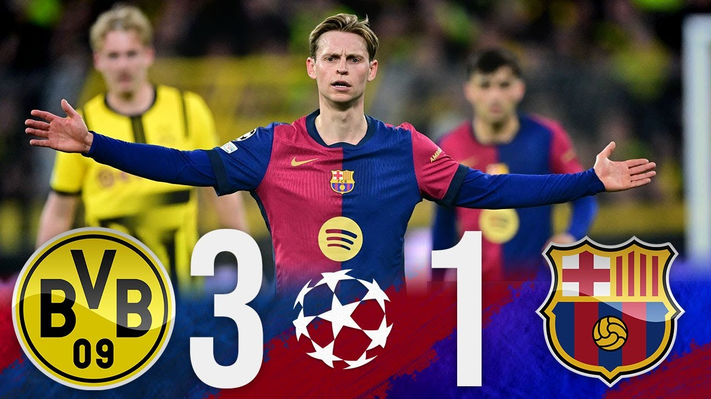

In one of the most remarkable nights at the Emirates Stadium, Arsenal stunned Real Madrid with a dominant 3-0 victory in the first leg of their UEFA Champions League quarter-final clash. After a tense and balanced first half where both teams tested each other's defenses, the game exploded into life after the break as Arsenal delivered a clinical second-half performance that left the Spanish giants reeling.
Declan Rice was the star of the show, opening the scoring in the 58th minute with a beautifully curled direct free-kick that left Madrid goalkeeper Andriy Lunin flat-footed. Just twelve minutes later, Rice made Champions League history by becoming the first player ever to score two direct free-kicks in a knockout stage match, doubling Arsenal's lead with another sublime strike that beat the wall and found the bottom corner.
With Madrid clearly shaken and struggling to gain control in midfield, Mikel Merino capitalized on the pressure and added a third goal in the 75th minute with a composed finish following a flowing Arsenal move. Real Madrid’s night went from bad to worse in stoppage time when Eduardo Camavinga was sent off after a reckless challenge, capping off a frustrating evening for Carlo Ancelotti’s men

Arsenal’s tactical discipline, high pressing, and efficient use of set-pieces completely outclassed a usually formidable Madrid side. This result gives Mikel Arteta’s side a massive advantage going into the second leg at the Santiago Bernabéu, where they will look to finish the job and reach the Champions League semi-finals for the first time since 2009.
Arsenal stunned Real Madrid with a 2-1 win in the second leg of their UEFA Champions League quarter-final at the Santiago Bernabéu, securing a 5-1 aggregate victory and reaching their first semi-final since 2009.
The match was tightly contested in the first half, with both teams creating chances but failing to break the deadlock. Arsenal had a golden opportunity when Bukayo Saka won a penalty, but his effort was saved by Thibaut Courtois.
Saka redeemed himself in the 64th minute, calmly slotting home the opener after a slick attacking move. Real Madrid responded swiftly, with Vinícius Júnior equalizing just three minutes later following a rare lapse by William Saliba
As Madrid pushed forward in desperation, Arsenal remained composed. Declan Rice put in a dominant performance in midfield, breaking up attacks and keeping possession. In stoppage time, Gabriel Martinelli finished off a counter-attack to secure the win and silence the Bernabéu crowd.

Despite Madrid’s efforts — including a disallowed goal by Kylian Mbappé for offside — they couldn't find a way past Arsenal’s solid backline. This result marks a major milestone for the Gunners, who have now made only their third Champions League semi-final in club history.
Arsenal will face Paris Saint-Germain in the next round, with dreams of reaching the final alive and well. Mikel Arteta’s side showed maturity, resilience, and quality — characteristics of true contenders.

In a thrilling first leg of the UEFA Champions League quarter-final, Inter Milan stunned Bayern Munich with a dramatic 2-1 away win at the Allianz Arena, taking a crucial advantage back to the San Siro. The match began with Bayern asserting their dominance in possession and chances, with Harry Kane hitting the post and Michael Olise narrowly missing early on. But despite their pressure, it was Inter who opened the scoring against the run of play. In the 38th minute, Lautaro Martínez finished off a swift counter-attack, calmly slotting the ball past the keeper to silence the Munich crowd.
Bayern continued to push forward in the second half, looking for a way back into the game. Their persistence paid off in the 85th minute when Thomas Müller, coming off the bench, pounced on a rebound to level the score. Just as the momentum seemed to swing in Bayern's favor, Inter responded almost immediately. In the 88th minute, substitute Davide Frattesi made a decisive impact, guiding in a low cross to score his first Champions League goal and restore Inter’s lead.
The result handed Bayern their first home defeat in European competition in over three years and leaves Thomas Tuchel's side with a mountain to climb in the return leg. With injuries to key players like Jamal Musiala, Manuel Neuer, and Alphonso Davies, Bayern face a tough challenge in Milan, while Simone Inzaghi's Inter will look to finish the job and book their place in the semi-finals
Inter Milan progressed to the UEFA Champions League semi-finals after a dramatic 2-2 draw against Bayern Munich at San Siro, winning 4-3 on aggregate. Bayern entered the second leg trailing 2-1 and came out strong. Harry Kane gave the German side hope with a goal in the 52nd minute, leveling the tie at 2-2 on aggregate.

However, Inter responded quickly. Lautaro Martínez equalized in the 58th minute, and just three minutes later, Benjamin Pavard — a former Bayern player — scored a powerful header to put Inter back in front. Bayern’s Eric Dier scored in the 76th minute to make it 2-2 on the night, but Inter held firm in the closing stages, with goalkeeper Yann Sommer making a crucial save in stoppage time.
The result sends Inter to their second semi-final in three seasons, where they will face Barcelona — a fixture that brings back memories of Inter’s iconic 2010 treble-winning campaign
For Bayern, this marks another disappointing Champions League exit. The match also signaled the end of an era, as Thomas Müller played his final Champions League game for the club. The 35-year-old, who has made 163 appearances in the competition, will depart in the summer.

Despite the setback, Bayern remain in strong form domestically, leading the Bundesliga by six points with five matches left. For Inter, the dream of lifting a fourth European title continues — and they now prepare for a heavyweight clash with Barcelona.
Barcelona produced a stunning display in the first leg of their UEFA Champions League quarter-final against Borussia Dortmund, cruising to a dominant 4-0 victory at the Estadi Olímpic Lluís Companys. The Catalan side took control early on, with Robert Lewandowski scoring twice against his former club, showcasing his trademark poise in front of goal. Raphinha was the standout performer, grabbing a goal and two assists in a sensational individual display that saw him equal Lionel Messi’s record for most goal involvements in a single Champions League season. Rising star Lamine Yamal also got on the scoresheet, highlighting the blend of youth and experience in Hansi Flick’s dynamic setup
Dortmund struggled to cope with Barcelona’s high press and incisive passing, rarely threatening the Spanish side’s goal. Although they responded in the second leg at Signal Iduna Park with a spirited 3-1 win—thanks to a hat-trick from Serhou Guirassy, which marked Dortmund’s first-ever win over Barcelona in European competition—it wasn’t enough to overturn the deficit. Barcelona advanced 5-3 on aggregate, securing their first appearance in the Champions League semi-finals in six years.

Despite suffering their first defeat of 2025 in the second leg, Flick was pleased with his side’s progress but acknowledged the need for more consistency and better game management. Barcelona now await the winner of Inter Milan vs Bayern Munich, as they continue their quest to bring European glory back to the club after years of disappointment.
Barcelona advanced to the UEFA Champions League semi-finals despite a 3-1 defeat to Borussia Dortmund in the second leg of their quarter-final tie on April 15, 2025. The aggregate score of 5-3 favored the Catalan side, thanks to their dominant 4-0 victory in the first leg.

Dortmund's Serhou Guirassy was the standout performer, netting a hat-trick with goals in the 11th, 49th, and 76th minutes. His efforts brought the German team close to an improbable comeback. However, an own goal by Dortmund's Ramy Bensebaini in the 54th minute provided Barcelona with a crucial away goal, easing the pressure and helping them maintain their aggregate lead.
This match marked Barcelona's first loss in 2025, ending a 24-game unbeaten streak. Despite the defeat, the team secured their first Champions League semi-final appearance since 2019. They are set to face Inter Milan in the next round, following Inter's aggregate victory over Bayern Munich.
Coach Hansi Flick made notable lineup decisions, resting key players like Pedri and Iñigo Martínez. Pedri's introduction in the second half added stability to Barcelona's midfield, aiding in managing Dortmund's aggressive play. Martínez's absence, aimed at preserving him for the semi-finals, was felt in the defense, which conceded three goals.

Barcelona now prepares to face Inter Milan in the semi-finals, aiming to reach the Champions League final for the first time in over a decade.

Paris Saint-Germain (PSG) advanced to the semi-finals of the UEFA Champions League after edging past Aston Villa in a thrilling two-legged quarter-final tie that ended 5-4 on aggregate. The second leg, played at Villa Park, was packed with drama as Aston Villa came agonizingly close to pulling off a historic comeback.
Having lost the first leg 3-1 in Paris—where PSG dominated through goals from Achraf Hakimi, Nuno Mendes, and Khvicha Kvaratskhelia—Villa had everything to do at home. But the French giants quickly extended their aggregate lead to 5-1 with two more early goals from Hakimi and Mendes, seemingly putting the tie to bed.
However, Unai Emery’s side showed incredible spirit. Youri Tielemans pulled one back just before halftime, and within minutes of the restart, John McGinn and Ezri Konsa scored in quick succession, making it 3-2 on the night and setting up a tense final half-hour. The Villa faithful roared their team on as they pushed for a fourth, but PSG held firm, thanks in part to key saves by Gianluigi Donnarumma.

Despite the loss on the night, Luis Enrique’s PSG progressed, though the second-leg collapse raised concerns. Ousmane Dembélé, named Player of the Match, criticized the team's loss of focus and urged his teammates to learn from the scare.
Paris Saint-Germain (PSG) secured their place in the UEFA Champions League semi-finals despite a 3-2 loss to Aston Villa in the second leg of their quarter-final tie. Thanks to a 3-1 victory in the first leg, PSG advanced with a 5-4 aggregate score

The match at Villa Park saw PSG take control early, extending their aggregate lead with goals from Achraf Hakimi in the 11th minute and Nuno Mendes in the 27th. At that point, the tie looked settled, but Aston Villa had other plans. Youri Tielemans pulled one back in the 34th minute, followed by a quick-fire double from John McGinn and Ezri Konsa in the 55th and 57th minutes respectively, making it 3-2 on the night.
Despite Villa’s momentum and passionate home crowd, PSG managed to hold on. Goalkeeper Gianluigi Donnarumma made several crucial saves in the final stages, preserving the aggregate advantage. Ousmane Dembélé, although named Player of the Match, refused the award after the match, visibly upset with his team's performance after surrendering a 2-0 lead.
Under Luis Enrique, PSG has adopted a youthful, energetic playing style, with an average squad age of just 24.4. They will now face Arsenal in the semi-finals, marking their first appearance at this stage since 2020.

Aston Villa, meanwhile, can be proud of their comeback attempt and performance under Unai Emery. Though eliminated, they remain in strong form domestically and will look ahead to an FA Cup semi-final against Crystal Palace.
click here to go back.......